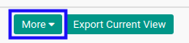
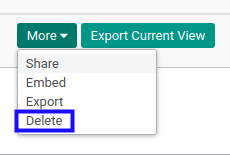
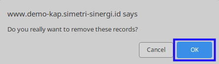

Menghapus Bidang Usaha
A. INPUT
(Tidak ada instruksi khusus)
B. LANGKAH KERJA
- Buka menu Partner -> Configuration -> Address Book -> Sectors. Abaikan jika sudah berada pada menu yang dimaksud.
- Seleksi data bidang usaha yang akan dihapus. Abaikan jika data sudah diseleksi.
- Klik tombol More pada bagian atas-tengah form.

- Klik tombol Delete pada dropdown yang muncul ketika tombol More diklik.

- Klik tombol Ok pada pop-up konfirmasi penghapusan yang muncul.

C. OUTPUT
- Data bidang usaha akan terhapus.